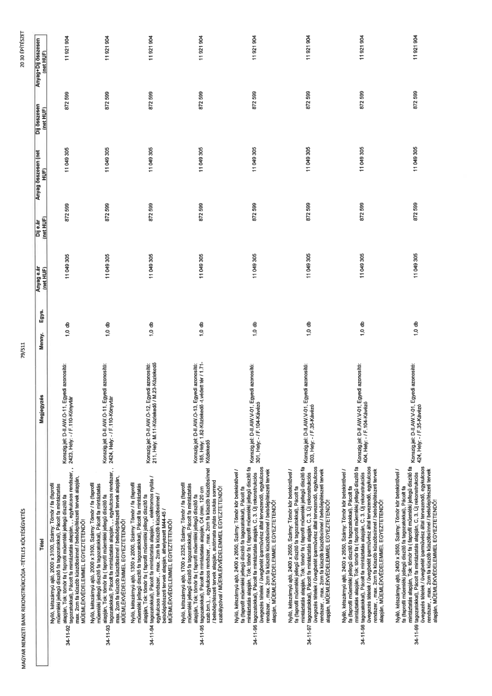

| Tétel | Megjegyzés | Menny. | Egys. | Anyag e.ár (net HUF) | Díj e.ár (net HUF) | Anyag összesen (net HUF) | Díj összesen (net HUF) | Anyag+Díj összesen (net HUF) |
|---|---|---|---|---|---|---|---|---|
| 34-11-92 Nyíló, kétszárnyú ajtó, 2000 x 3100, Szárny: Tömör / fa (faprofil műemléki jellegű díszítő fa tagozatokkal), Pácolt fa mintázatás alapján, Tok: tömör fa (faprofil műemléki jellegű díszítő fa tagozatokkal), Pácolt fa mintáztatás alapján, ,, egykulcsos rendszer, , max. 2cm fa küszöb küszöbsínnel / belsőépítészeti tervek alapján, MŰEMLÉKVÉDELEMMEL EGYEZTETENDŐ! | Konszig jel: D-II.AW.O-11, Egyedi azonosító: 2423, Hely: - / F.110-Könyvtár | 1,0 | db | 11 049 305 | 872 599 | 11 049 305 | 872 599 | 11 921 904 |
| 34-11-93 Nyíló, kétszárnyú ajtó, 2000 x 3100, Szárny: Tömör / fa (faprofil műemléki jellegű díszítő fa tagozatokkal), Pácolt fa mintázatás alapján, Tok: tömör fa (faprofil műemléki jellegű díszítő fa tagozatokkal), Pácolt fa mintáztatás alapján, ,, egykulcsos rendszer, , max. 2cm fa küszöb küszöbsínnel / belsőépítészeti tervek alapján, MŰEMLÉKVÉDELEMMEL EGYEZTETENDŐ! | Konszig jel: D-II.AW.O-11, Egyedi azonosító: 2424, Hely: - / F.110-Könyvtár | 1,0 | db | 11 049 305 | 872 599 | 11 049 305 | 872 599 | 11 921 904 |
| 34-11-94 Nyíló, kétszárnyú ajtó, 1350 x 2000, Szárny: Tömör / fa (faprofil műemléki jellegű díszítő fa tagozatokkal), Pácolt fa mintázatás alapján, Tok: tömör fa (faprofil műemléki jellegű díszítő fa tagozatokkal), Pácolt fa mintáztatás alapján, ,, elektromos nyitás / egykulcsos rendszer, , max. 2cm fa küszöb küszöbsínnel / belsőépítészeti tervek alapján, áthelyezett M44-45 / MŰEMLÉKVÉDELEMMEL EGYEZTETENDŐ! | Konszig jel: D-II.AW.O-12, Egyedi azonosító: 211, Hely: M.11-Közlekedő / M.23-Közlekedő | 1,0 | db | 11 049 305 | 872 599 | 11 049 305 | 872 599 | 11 921 904 |
| 34-11-95 Nyíló, kétszárnyú ajtó, 1700 x 2325, Szárny: Tömör / fa (faprofil műemléki jellegű díszítő fa tagozatokkal), Pácolt fa mintázatás alapján, Tok: tömör fa (faprofil műemléki jellegű díszítő fa tagozatokkal), Pácolt fa mintáztatás alapján, C4 (min. 120 cm szab.bm.), ,, egykulcsos rendszer, , max. 2cm fa küszöb küszöbsínnel / belsőépítészeti tervek alapján, automata nyitás csukás sorrend szabályzóval / MŰEMLÉKVÉDELEMMEL EGYEZTETENDŐ! | Konszig jel: D-II.AW.O-13, Egyedi azonosító: 185, Hely: 1.82-Közlekedő -t.védett tér / 1.71-Közlekedő | 1,0 | db | 11 049 305 | 872 599 | 11 049 305 | 872 599 | 11 921 904 |
| 34-11-96 Nyíló, kétszárnyú ajtó, 2400 x 2650, Szárny: Tömör kör betekintővel / fa (faprofil műemléki jellegű díszítő fa tagozatokkal), Pácolt fa mintázatás alapján, Tok: tömör fa (faprofil műemléki jellegű díszítő fa tagozatokkal), Pácolt fa mintáztatás alapján, C, 3. Új rekonstrukciós üvegezés tételek / üvegbetét iparművész által tervezendő, egykulcsos rendszer, , max. 2cm fa küszöb küszöbsínnel / belsőépítészeti tervek alapján, MŰEMLÉKVÉDELEMMEL EGYEZTETENDŐ! | Konszig jel: D-II.AW.V-01, Egyedi azonosító: 301, Hely: - / F.104-Kávézó | 1,0 | db | 11 049 305 | 872 599 | 11 049 305 | 872 599 | 11 921 904 |
| 34-11-97 Nyíló, kétszárnyú ajtó, 2400 x 2650, Szárny: Tömör kör betekintővel / fa (faprofil műemléki jellegű díszítő fa tagozatokkal), Pácolt fa mintázatás alapján, Tok: tömör fa (faprofil műemléki jellegű díszítő fa tagozatokkal), Pácolt fa mintáztatás alapján, C, 3. Új rekonstrukciós üvegezés tételek / üvegbetét iparművész által tervezendő, egykulcsos rendszer, , max. 2cm fa küszöb küszöbsínnel / belsőépítészeti tervek alapján, MŰEMLÉKVÉDELEMMEL EGYEZTETENDŐ! | Konszig jel: D-II.AW.V-01, Egyedi azonosító: 303, Hely: - / F.35-Kávézó | 1,0 | db | 11 049 305 | 872 599 | 11 049 305 | 872 599 | 11 921 904 |
| 34-11-98 Nyíló, kétszárnyú ajtó, 2400 x 2650, Szárny: Tömör kör betekintővel / fa (faprofil műemléki jellegű díszítő fa tagozatokkal), Pácolt fa mintázatás alapján, Tok: tömör fa (faprofil műemléki jellegű díszítő fa tagozatokkal), Pácolt fa mintáztatás alapján, C, 3. Új rekonstrukciós üvegezés tételek / üvegbetét iparművész által tervezendő, egykulcsos rendszer, , max. 2cm fa küszöb küszöbsínnel / belsőépítészeti tervek alapján, MŰEMLÉKVÉDELEMMEL EGYEZTETENDŐ! | Konszig jel: D-II.AW.V-01, Egyedi azonosító: 404, Hely: - / F.104-Kávézó | 1,0 | db | 11 049 305 | 872 599 | 11 049 305 | 872 599 | 11 921 904 |
| 34-11-99 Nyíló, kétszárnyú ajtó, 2400 x 2650, Szárny: Tömör kör betekintővel / fa (faprofil műemléki jellegű díszítő fa tagozatokkal), Pácolt fa mintázatás alapján, Tok: tömör fa (faprofil műemléki jellegű díszítő fa tagozatokkal), Pácolt fa mintáztatás alapján, C, 3. Új rekonstrukciós üvegezés tételek / üvegbetét iparművész által tervezendő, egykulcsos rendszer, , max. 2cm fa küszöb küszöbsínnel / belsőépítészeti tervek alapján, MŰEMLÉKVÉDELEMMEL EGYEZTETENDŐ! | Konszig jel: D-II.AW.V-01, Egyedi azonosító: 424, Hely: - / F.35-Kávézó | 1,0 | db | 11 049 305 | 872 599 | 11 049 305 | 872 599 | 11 921 904 |
